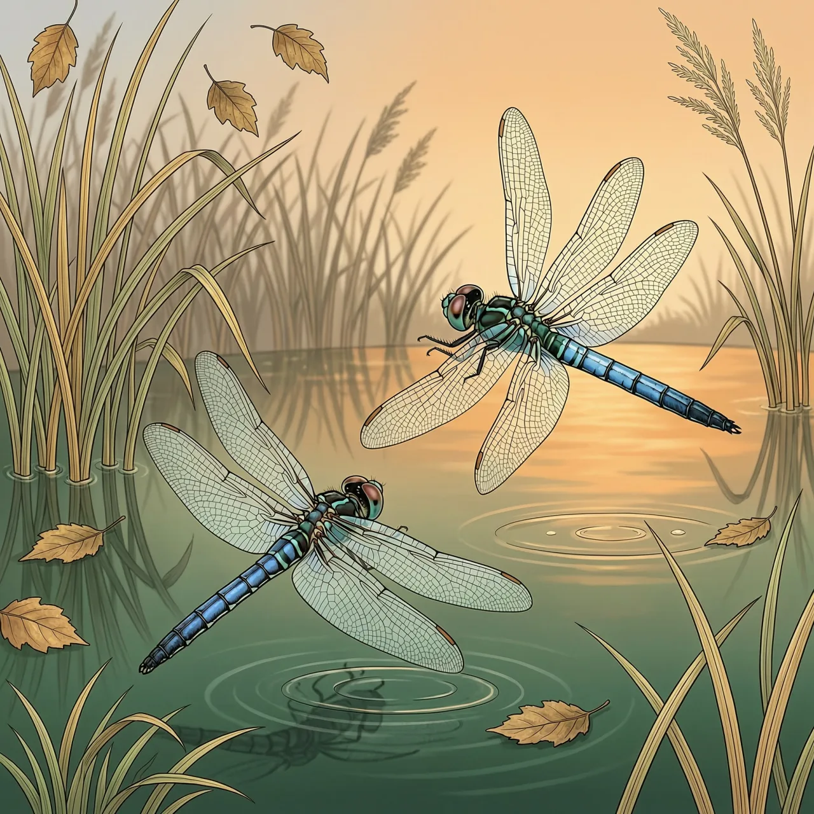
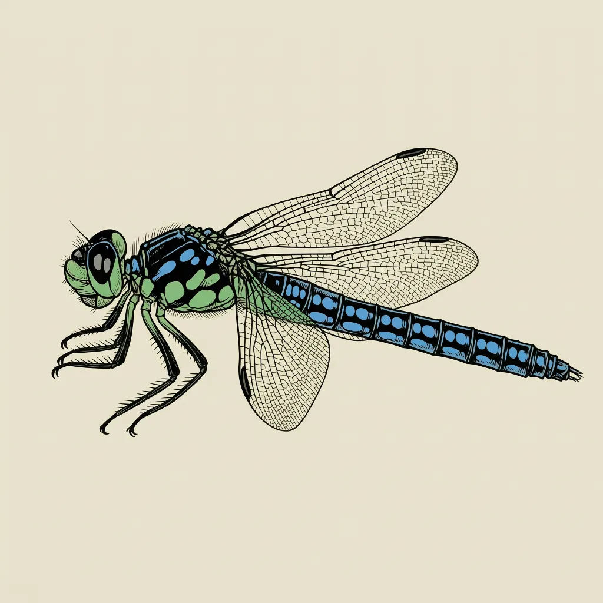

蓝晏蜓是大型蜻蜓，体长约7厘米，黑色身体带绿色斑纹，雄性腹部有蓝点。雄虫在湖边与河边巡飞，靠螺旋飞行和身体撞击驱赶对手。雌虫在静水或慢流的水里产卵，有时插进苔藓、芦苇或腐木。前一年夏秋产的卵要到春天才孵化，幼虫在水里发育3年。
花园上方的空地，一只7厘米长、黑身带绿纹的蜻蜓来回巡飞，腹部一列蓝色斑点，那是蓝晏蜓的雄虫在巡逻。湖边和河边最容易见到它，但它不守在水岸，花园和林地都广泛出没，前提是附近得有静止或慢流的水可供产卵。雌虫对产卵点挑得仔细，静水水面是一类，苔藓、芦苇、腐木里又是一类。蓝晏蜓对人也不躲，会主动凑近。
守一片水面，蓝晏蜓雄虫用的是最直接的办法：撞。它沿湖岸来回巡飞，另一只雄虫一进入视野就升空追击，飞成螺旋，用身体把对方顶开。被撞的一方退出这片水域，巡逻权就留在赢家手里。7厘米的体长在蜻蜓里算大，空中相撞才有分量。一条湖岸就此被雄虫们分段占下，各守各的路线。
夏天在水面上空看到的蓝斑大蜓，只是蓝晏蜓一生里很短的一段。雌虫产卵时猛戳腹部，把卵塞进静水、苔藓、芦苇或腐木里，整个过程安静得几乎不引人注意。这些卵并不马上孵化，头一年夏天或秋天产下的，要到春天才孵出幼虫。幼虫在水里要待满3年，吃水中昆虫、蝌蚪和细小的鱼，7月至8月才羽化为成虫。冬天走过池塘边，蓝晏蜓正以卵的形态藏在岸上的苔藓和芦苇里，看不出任何动静。
